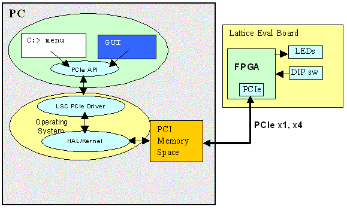
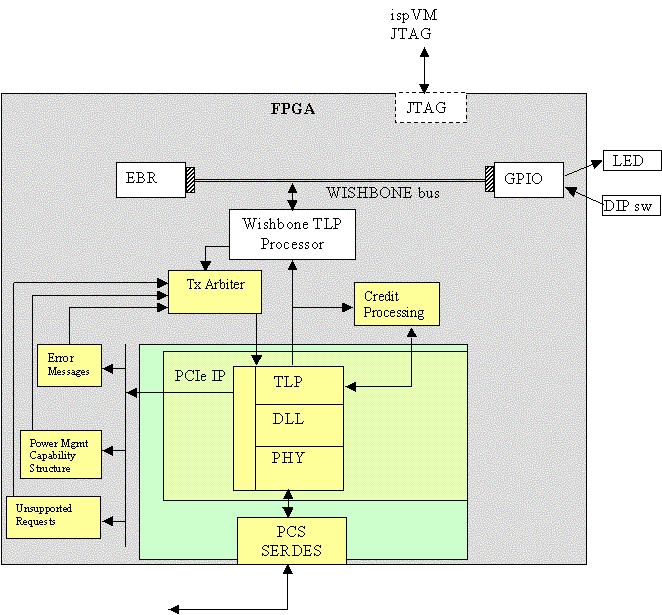

Lattice PCIe IP Basic Demo
Introduction
The demo runs on a standard PC, and accesses the Lattice PCIe evaluation board that is installed in a PCIe slot. The following figure shows the relationship of the hardware and software components of the demo.
The PCIe IP, in the Lattice FPGA on the eval board, acts as a PCIe endpoint. A PCIe end-point device looks like a regular PCI device to application software executing on a PC. It is just a memory-mapped device occupying a certain range(s) of the PCI memory space. When the PC boots the BIOS and OS probe the PCI Express and PCI buses and detect the devices present on the buses and assign them ranges in the PCI memory space. The PCI memory space is mapped into the application software’s memory space by the supplied driver and OS system calls. Once the mapping is done, application IP registers, sitting on top of the PCIe IP core, can be read/written as memory locations by the application software. The demo software writes to the LED register, reads and displays the DIP switch setting and reads/writes the internal FPGA EBR memory.

The demo software shows that the Lattice PCIe IP correctly handles the PCI Express protocol in a PC through the interaction with the devices on the eval board. The demo exercises the following functions:
- Displays Operating System information on the detected Lattice evaluation board.
- Displays information about the PCIe IP core, such as reading and displaying all the pertinent information in the configuration registers, and driver parameters.
- Performs GPIO Register Access: blink LED’s; read DIP switch values
- Performs Memory Access: write a pattern of values into internal FPGA EBR memory, read back and verify the all accesses are error-free.
Supported Boards
- LatticeECP2M PCIe Solutions Board
- LatticeECP2M35 x4 PCI Express Board
- LatticeECP2M50 x4 PCI Express Board
- LatticeSCM80 x4/x8 PCI Express Board
- LatticeSCM25 x1 PCI Express Board
Setup and Installation
Consult the appropriate Demo Installation Guides and Evaluation Board User's Guides to ensure the proper bitstream
is loaded into the SPI flash, the board is installed correctly, is functioning correctly, the proper driver has
been loaded and the demo application has be installed.
Demo Operations
Device Info Page
The opening page, Device Info, displays information about the device driver and the device's PCI configuration registers.
The data displayed is for informational purposes and can not be edited. This information is obtained from the Lattice PCIe driver when the OS detects the board and loads the driver. Displaying this page also causes the driver to issue PCI Config Type 0 read requests again to see if register values have changed.
Tests Page
The Tests tab has various tests that can be run to show that the IP is accessible from host software via the PCIe bus. The GUI has fields for entering data to be sent to device registers in the FPGA design. These fields are color-coded to indicate the data format they accept.
- GREEN = hex values, do not include any prefixes (0x) or suffires (H), just enter digits
- YELLOW = character string, ie. File names, paths, a letter
- BLUE = decimal (base 10) values
EBR Memory Section
The EBR Memory section tests the access to the 16KB of EBR internal to the FPGA. Accesses are done on a byte basis. All 16k memory locations are accessed successively, testing the throughput of PCIe and memory interface. The following actions can be performed
- Pattern Tests - pressing Run starts a test that checks all locations of the EBR can be read and written and that the contents are correct. First, all 16KB are cleared to 0 and checked. Then various patterns (AA, 55, 01, FF) are written to all locations and verified. If everything passes, PASS is displayed. If a memory location ever has an incorrect value the test aborts and displays FAIL.
- READ - The contents of the EBR memory are read from the value entered in the offset field. 256 bytes are read and displayed in the window above.
- CLEAR - sets all 16KB to 0x00.
- FILL - writes the byte value entered in the field to all 16K locations.
- LOAD - loads 16KB of binary data from the file specified (or as much data as is in the file) into EBR memory, starting at location 0. This can be used to load a known pattern into the EBR memory by using a file created by some other tool.
- SAVE - writes all 16KB of EBR memory to the file specified. This can be used to save the contents of EBR memory for off-line processing ie. To verify that the pattern loaded in with LOAD is correctly saved in the EBR.
16 Segment Display Section
The 16 Segment display section has two test modes. In the first mode a pre-set sequence of segments are lit and then characters are written to the display. Pressing the Run button starts this operation. It will take approximately 30 seconds to complete. You must observe the 16 Segment LEDs to see if it is operating correctly. The correct sequence is:
- Light all segments, one at a time, around the perimeter.
- Light all inner segments in a clock-wise order.
- Turn off all inner segments in reverse order
- Turn off all outer segments in reverse order
- Write the characters LATTICE* one at a time to the display
- The asterix character should be displayed when the test ends
The second mode of operation allows a single character to be sent to the display by typing the character into the box to the right of the Set button and then pressing Set. Any printable ASCII character can be displayed (lower case are displayed as upper case).
DIP Switch
The DIP Switch section shows that user changes to the switches on the eval board are seen by the application software on the PC. The GUI polls the DIP switch register 10 times a second and displays the value read from the 8 bit DIP switch register.
The Get button can be used to immediately update the value. This would be used if No Polling was selected from the Settings drop-down menu. Normally this is not used.
Counter
The Counter section allows you to control a 32 bit down counter in the FPGA hardware. The counter is driven by the 125 Mhz clock that feeds the IP. The counter is started by selecting the Start radio button. Counting begins from the value entered into the Reload Value field. The current count value is displayed in the Current Count field.
The Current Count value is updated 10 times a second by the GUI polling (reading) the count register in the FPGA application IP.
Rd/Wr Page
The Read/Write page is used for peeking and poking registers and EBR memory values in the application IP. This is primarily used for debugging and diagnosing the application IP registers. Consult the demo IP register map for a list of device registers and their functions.
Data accesses can be specified as byte, short or word operations by selecting the Data Size. Access are done to the selected BAR. The memory contents are displayed in the window. The address uses the convention that the upper nibble (31:28) specifies the BAR being accessed.
Data can be written to registers using the WRITE button. Specify the offset in the BAR to start writing at and the hex data in the Data field. Separate each value with a space. Data size should match the Data Size selected at the top of the page in Memory Settings.
Only BAR1 is accessible in the current demo.
16 Seg Page
The 16 Segment page provides a way to interactively light segments on the display. Clicking on a segment in the image will immediately cause the corresponding segment on the LED to be lit. The states of the LED segments are converted to a 16 bit word value (each segment is controlled by a bit) and written to the LED control register in the GPIO portion of the IP in the FPGA. This demonstrates a memory write across the PCIe bus.
Demo Operations:
- Clicking on a segment will turn it on or off (toggles).
- Right-click on the background area behind the segments will clear the entire display.
- The 16 bit value written to the LED register in the FPGA is shown in the bottom left.
IP Design Details
IP Block Diagram

GPIO Register Map
|
BAR1
|
Location
|
|
Offset (Hex)
|
Byte 3 [31:24]
|
Byte 2 [23:16]
|
Byte 1[15:8]
|
Byte 0 [7:0]
|
|
0000
|
ID Register
|
|
0004
|
Scratch Pad Register
|
|
0008
|
DIP Switch
|
rsvd
|
16 Segment LED
upper 8 bits lower 8 bits
|
|
000C
|
rsvd
|
rsvd
|
rsvd
|
Counter ctrl
|
|
0010
|
Current Counter Value
|
|
0014
|
Counter Reload Value
|
- Demo ID Register (0x00): 32 bit pre-programmed, read-only value: 0x53030100 [DeviceID][HdwRev][AppID]
- Scratch Pad Register (0x04): 32 bit register that can be read or written with any user value to verify reads/writes. Byte, short or long access is supported.
- 16 Segment LED Regsiter (0x08): 16 bit register, writing a 1 to a bit lights the LED segment, writing a 0 turns it off; LED segment A wired to lsb (d0) and segment U wired to msb (d15)
- DIP Switch Register (0x0b): Read Only; Each bit indicates the position of a corresponding switch. 0=up, 1=down
- Counter Control (0x0c): bits to control operating mode of the 32 bit counter register
- Bit 0 = Run : 0 = stop, 1 = counter runs
- Bit 1 = Reload : 0 = halt at 0, 1 = reload with Reload Register and continue counting
- Current Counter Value (0x10) – 32 bit current down-count value
- Counter Reload Value (0x14) – 32 bit value to reload into Counter when count reaches 0
EBR Memory
The EBR is mapped as a 32 bit wide
device with 4096 addresses. The total size is 16kB (4096 x 32 bit).
It can be accessed with byte, short or word accesses.
|
BAR1
|
Location
|
|
Offset (Hex)
|
Byte 3 [31:24]
|
Byte 2 [23:16]
|
Byte 1[15:8]
|
Byte 0 [7:0]
|
|
1000
|
|
|
|
|
|
. . .
|
|
|
|
|
|
. . .
|
|
|
|
|
|
4ffc
|
|
|
|
|
Trouble Shooting (Windows)
Trouble with the Board
Ensure the board is installed in a PCIe slot. It can physically fit into a PCI slot. This could damage the board or PC if power is applied when its the wrong type of slot.
Ensure the board has a valid PCIe bitstream loaded in the SPI flash (and if applicable, that the Mode DIP switches are set to program from SPI flash).
Ensure the 4 Status LEDs are on, indicating the board is seen as a PCIe endpoint. If the 2 yellow LEDs and 2 green LEDs are not on, the board will not be recognized by the PC BIOS or OS. You can try installing in a different PCIe slot to see if that fixes the link-up problem. You can also try pressing the Eval Board's reset button immediately after the PC boots.
Ensure the board is seen by the OperatingSystem. For Winodows, check My Computer > Properties > Hardware > Device Manager and verify the lscpcie2.sys driver and eval board are shown in the list. If not, shutdown the system and try another slot. If the board is present, check it Properties and the Resource tab to verify memory was assigned to it. Also verify the Vendor ID and Device ID are valid, as seen be Windows Plug-n-Play. If the values are invalid, perhaps the bitstream is corrupt and needs to be reloaded into SPI flash.
Trouble with the Driver
The eval board must be installed in the PC, and seen by Windows, for the driver to be installed. If you do not see the Found New Hardware message when logging in after installing the board, check the board LEDs. Try a different PCIe slot.
Make sure you specify the correct search location for the driver during installation. Tell Windows to install from the Drvrs\ directory.
You will need administrator permission to install device driver files.
Trouble Running the Demo
The eval board must be installed in the PC, and seen by Windows, for the driver to be installed or loaded. The driver must be loaded by Windows in order to run the demo. Again verify Windows sees the board and has loaded a driver for it.
If the GUI displays an error (ERROR LOADING LIBRARY:Cpp_Jni - running in View Only mode) when launched, then the driver could not be found or loaded. There are 2 causes
- The driver was never loaded (or eval board is not installed)
- The board failed to be detected by Windows.
Either way, the board needs to be re-installed and seen by Windows and the lscpcie2.sys driver needs to be associated with the hardware.
Windows Debug Tools
Windows offers some utilities to interrogate the operation of hardware devices. Use these tools to verify the eval board device driver is loaded and running.
Right-click on the My Computer icon and select Properties to bring up the Hardware Wizard and Device Manager. The Device Manager provides software driver information for devices detected by Windows Plug-n-Play manager. The most useful utility is to verify that the lscpcie2 driver has been installed and resources assigned to it.
Trouble Shooting (Linux)
Trouble Installing
You will need root permission to install device driver files.
The Linux distribution needs to have the udev service running.
You may also need the kernel development package (just the header files, not the complete source package)
installed if you need to rebuild the drivers from their source.
If you get errors during install such as FATAL: Error inserting lscpcie2... then you will need to rebuild the
drivers to match your Linux kernel and distribution.
This can be done by simply running make drivers.
If probelms are encountererd, see the documentation in the lscpcie2 or lscdma
driver source for details on building from the source.
You may also need to rebuild the demo applications from the source if the Linux kernel and distribution
varies greatly. Simply run make demos.
Trouble with the Board
Ensure the board is installed in a PCIe slot. It can physically fit into a PCI slot. This could damage the board or PC if power is applied when its the wrong type of slot.
Ensure the board has a valid PCIe bitstream loaded in the SPI flash (and if applicable, that the Mode DIP switches are set to program from SPI flash).
Ensure the 4 Status LEDs are on, indicating the board is seen as a PCIe endpoint. If the 2 yellow LEDs and 2 green LEDs are not on, the board will not be recognized by the PC BIOS or OS. You can try installing in a different PCIe slot to see if that fixes the link-up problem. You can also try pressing the Eval Board's reset button immediately after the PC boots.
The eval board must be installed in the PC, and seen by Linux for the demo (and driver) to operate properly.
Check that the board is seen with the command: /sbin/lspci
This will display all enumerated PCI and PCIe devices in the system. Look for a Lattice board.
If the board is not listed (vendor ID = 0x1204) then try another PCIe slot. Also verify the 4 PCIe link status LEDs
are all lit.
If the board is seen with lspci, then verify the 16 segment LED is displaying an "I", which means the driver has
initialized the board. If the "I" is not displayed then see the next section.
Trouble with the Driver
If the board is seen by the PCI subsystem, but does not display an "I" when the driver is first loaded, the driver may
have errored, or not loaded at all. To check the driver status use the following commands:
/sbin/lsmod - The output should list either the lscpcie2 or lscdma drivers are loaded.
dmesg - This displays error and status messages from the driver during its load and operation.
Normal builds will not have much debug info present, but error conditions and warnings will be logged.
The log entry will be prefixed with lscpcie2 or lscdma.
/dev - check for lscpcie2 or lscdma device nodes in the /dev directory. If they
are not present (and the driver module is loaded) then the driver did not find any boards. Check for errors with dmesg.
/sys/class - check for lscpcie2 or lscdma class types in the directory. If they
are not present (and the driver module is loaded) then the driver did not find any boards. Check for errors with dmesg.
The driver directories under each demo contain script files to manually load and remove the driver for debugging.
Try running insdrvr debug=1 to insert the driver and enable debugging. Check the driver messages with
dmesg. Use rmdrvr to remove the driver and try inserting again.
Remember, you will probably need to rebuild the driver to match your Linux kernel distribution. Do not expect the
distributed driver binary to work on all Linux systems.
If you can not get the driver to load, please contact Lattice Support for further assistance.
Trouble Running the Demo
The eval board must be installed in a PCIe slot in the PC, and seen by Linux, for the driver to properly load.
The driver must be loaded by Linux in order to run the demo. Again verify Linux sees the board and has loaded a driver for it.
If the GUI displays an error (ERROR LOADING LIBRARY:Cpp_Jni - running in View Only mode) when launched, then the driver could not be found or loaded. There are 3 causes
- The driver was never loaded (or eval board is not installed) - run make install
- The board failed to be detected by Linux - verify the status LEDs
- The driver errored during detection of the board - run dmesg for diagnostics
Linux Debug Tools
The following is a list of command line tools that can be run to discover the status of drivers and devices in the system.
/sbin/lsmod - The output will list drivers loaded in the system.
dmesg - This displays error and status messages from the kernel and drivers.
cat /proc/devices | grep lsc - checks for lscpcie2 or lscdma devices detected
cat /proc/modules | grep lsc - checks for lscpcie2 or lscdma drivers installed
cat /proc/interrupts - displays interrupt connectivity of driver/board when demo is running
cat /proc/driver/lscpcie2 - displays driver parameter information
cat /proc/driver/lscdma - displays driver parameter information